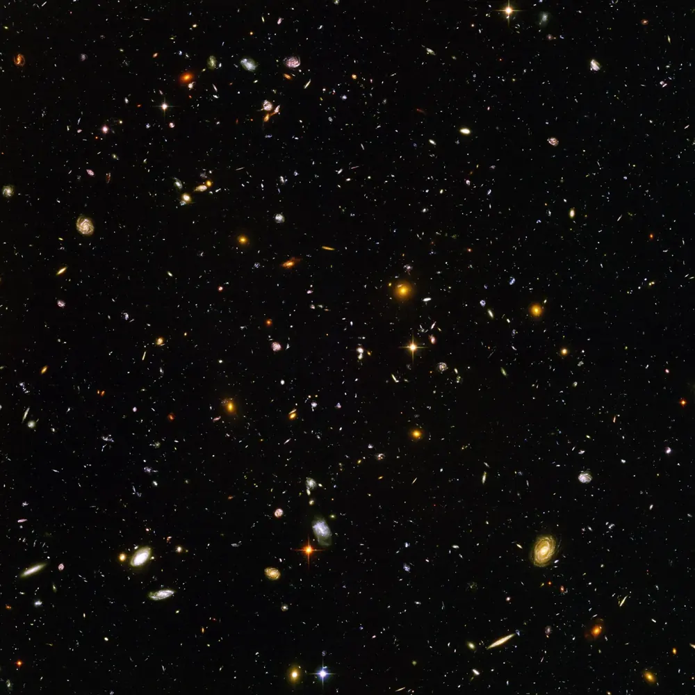

← Blog · 16 November 2026 · 12 min read
⏳ Time travel: what physics really allows

📷 NASA and ESA · Public domain
You are a time traveller right now. You move into the future at one second per second, like everyone else. The real question is whether you can go faster than that, or go backwards. Physics has a surprising answer: the first is real and has been measured many times, and the second is not ruled out by the equations, but it needs things nobody has ever found.
What is time, for a physicist?
Before 1905, everyone thought time was the same everywhere: one big clock ticking for the whole universe. Albert Einstein showed that this is wrong. Space and time are woven together into one thing, spacetime, and how fast your clock ticks depends on how fast you move and how strong the gravity around you is.
This is not a trick of clocks. Everything slows down together: your heartbeat, your thoughts, the atoms in your body. You would never feel it. You would only notice when you met someone whose clock had ticked at a different speed.
Way 1 to the future: go very fast
Einstein’s special relativity (1905) says that a moving clock ticks more slowly than one at rest. The effect is called time dilation. At everyday speeds it is unimaginably small. Near the speed of light (about 300,000 km every second) it becomes huge.
The slowing is given by one number, the Lorentz factor: γ = 1 / √(1 − v²/c²), where v is your speed and c is the speed of light. If γ is 10, then one year for you is ten years for the people you left behind.
| Speed | How much your clock falls behind in a year of moving |
|---|---|
| A car on the motorway (100 km/h) | 135 billionths of a second |
| An airliner (900 km/h) | 11 millionths of a second |
| The ISS (7.7 km/s) | 0.01 seconds |
| Voyager 1 (17 km/s) | 0.05 seconds |
| Parker Solar Probe at its fastest (192 km/s) | 6.5 seconds |
| 50% of the speed of light | 1 year for you = 1.15 years on Earth |
| 90% of the speed of light | 1 year for you = 2.29 years on Earth |
| 99% of the speed of light | 1 year for you = 7.09 years on Earth |
| 99.9% of the speed of light | 1 year for you = 22.37 years on Earth |
| 99.99% of the speed of light | 1 year for you = 70.71 years on Earth |
For the slow speeds the gravity effect (below) is left out, so the ISS line is the speed part only.
Has anyone really done it?
- Cosmonaut Sergei Krikalev spent 803 days in orbit. Because he was moving so fast, he came back about one fiftieth of a second younger than if he had stayed home. He has travelled further into the future than anyone else.
- Astronaut Scott Kelly spent almost a year on the ISS while his identical twin Mark stayed on Earth. Scott came back a few thousandths of a second younger than his twin.
- Atomic clocks on airliners. In 1971 Joseph Hafele and Richard Keating flew very precise clocks around the world on normal passenger flights. When they landed, the clocks disagreed with the ones left at home by billionths of a second, just as Einstein predicted.
- Muons from the sky. When cosmic rays hit the air about 15 km up, they make tiny particles called muons. A muon falls apart in about 2.2 millionths of a second, which should be far too short to reach the ground. Yet we detect them at sea level, because at 99.9% of the speed of light their clocks run slow.
- Particle accelerators. Protons in the Large Hadron Collider at CERN move so close to the speed of light that their clocks run about 7,000 times slower than ours.
The twin paradox
Imagine twins. One stays on Earth. The other flies to a star 10 light-years away at 99.5% of the speed of light and comes straight back. For the twin on Earth the trip takes about 20 years. For the traveller, whose γ is about 10, it takes only about 2 years. When they meet again, the traveller is 18 years younger than their twin. It sounds like a paradox (each twin sees the other moving), but it is not: only the traveller turns around and changes speed, and that breaks the symmetry.
🚀 Your time machine to the future
Choose a speed and how long the trip lasts for you. See how much time passes on Earth.
The catch: energy
Going fast enough to make a big jump is the hard part. To push a spaceship of just one tonne to 99% of the speed of light you would need about 5.5 × 10²⁰ joules of energy, roughly what all of humanity uses in a whole year. Today’s fastest spacecraft, the Parker Solar Probe, reaches 0.064% of the speed of light.
Way 2 to the future: sit near strong gravity
Einstein’s general relativity (1915) adds a second effect: clocks deeper in gravity tick more slowly. A clock on the floor runs a tiny bit slower than one on a shelf.
- GPS depends on it. GPS satellites fly about 20,200 km up, where gravity is weaker. Their clocks gain about 45 millionths of a second a day because of the weaker gravity and lose about 7 because of their speed. That is 38 millionths of a second a day. Without correcting for this, your phone’s map would drift by roughly 10 km every day.
- Even 33 cm matters. In 2010 scientists at NIST in the USA compared two extremely precise aluminium clocks and saw the higher one tick faster when it was lifted by just 33 centimetres.
- Earth’s centre is younger. Because gravity slows time deeper down, physicists worked out in 2016 that Earth’s core is about two and a half years younger than its surface.
- Neutron stars. On the surface of a neutron star, a ball heavier than the Sun squeezed to the size of a city, clocks run roughly a fifth slower than far away.
- Black holes. Close to a black hole the slowing becomes extreme. In the film Interstellar (whose science adviser was the Nobel-winning physicist Kip Thorne), one hour on a planet near a giant spinning black hole is seven years on Earth. That planet is made up, but the physics behind it is real. At the edge of a black hole, the event horizon, time seen from far away seems to stop.
So you could travel to the future by orbiting close to a black hole for a while and then flying away. You would come back to a world that had moved on by years while only hours passed for you.
What about going back in time?
This is where things get strange. General relativity does not forbid travel to the past. Some solutions of Einstein’s equations contain closed timelike curves: paths through spacetime that loop back to their own past. But every one found so far needs something we have never seen:
🌀 Gödel’s universe (1949)
The mathematician Kurt Gödel found a universe that spins as a whole, where you could travel into your own past. Our universe does not seem to spin.
🕳️ Wormholes (1988)
Kip Thorne and Michael Morris showed that a tunnel through spacetime could, in theory, be turned into a time machine. Keeping it open needs “exotic matter” with negative energy, which has only been seen in tiny amounts in the lab (the Casimir effect).
🧵 Tipler cylinder (1974)
Frank Tipler found that an extremely heavy cylinder spinning very fast could twist spacetime into a loop. But it would have to be infinitely long.
➰ Cosmic strings (1991)
J. Richard Gott showed that two cosmic strings, thin threads of energy left from the early universe, racing past each other could allow loops in time. Nobody has found a cosmic string.
💨 Faster than light
In relativity, anything that goes faster than light would, for some observers, arrive before it left. That is why faster-than-light travel and time travel to the past are really the same problem. Nothing with mass has ever been seen moving faster than light.
🚪 No visits before the machine
In wormhole-type time machines you can never travel back to a time before the machine was built. That is one answer to “why haven’t we met tourists from the future?”
The paradoxes
The grandfather paradox. You go back and stop your grandparents from meeting. Then you are never born, so you never go back, so they do meet, so you are born… Which is true?
The bootstrap paradox. You travel back and give a young composer the music of their own famous symphony, which they then publish. Who wrote the music? The information has no beginning.
Physicists have suggested three ways out:
- The past cannot be changed. The Russian physicist Igor Novikov proposed that anything a time traveller does was always part of history. You can visit the past, but whatever you try, events work out so that nothing contradicts itself.
- Branching histories. In the “many worlds” idea of quantum physics, a time traveller would arrive in a different branch of history. In 1991 the physicist David Deutsch showed how quantum mechanics could make such loops consistent.
- Nature forbids it. Stephen Hawking proposed the chronology protection conjecture (1992): the laws of physics, once we understand quantum gravity, will always stop a time machine from forming, for example because the energy in the loop would build up without limit and destroy it.
You look into the past every night
There is one kind of time travel everybody can do: looking up. Light takes time to reach us, so we always see things as they were, not as they are.
| What you look at | You see it as it was |
|---|---|
| The Moon | 1.3 seconds ago |
| The Sun | 8 minutes 20 seconds ago |
| A radio message from Voyager 1 | about 24 hours ago (see where it is now) |
| Proxima Centauri, the nearest star | 4.2 years ago |
| The Andromeda Galaxy | 2.5 million years ago |
| The most distant galaxies seen by the James Webb Space Telescope | more than 13.4 billion years ago, when the universe was about 300 million years old |
| The cosmic microwave background, the oldest light there is | 13.8 billion years ago, about 380,000 years after the Big Bang |
The photo at the top of this post, the Hubble Ultra Deep Field, is a time machine of its own: almost every speck in it is a galaxy, and some of them are seen as they were more than 13 billion years ago.
So, can we time travel?
✅ To the future
Yes. It is proven and measured every day, from GPS satellites to astronauts. Small jumps are easy. Big jumps need speeds close to light or the gravity of a black hole, which are far beyond us today.
❓ To the past
Not ruled out by Einstein’s equations, but every known recipe needs something never observed: exotic matter, infinite cylinders or cosmic strings. Most physicists expect a full theory of quantum gravity to forbid it.
Quick answers
Does time really slow down, or do clocks just run wrong?
Time itself. Every process slows down together, including your body’s ageing, which is why the twin who travels comes back younger.
Would I feel time slowing down?
No. Your own time always feels normal to you. You only notice when you compare clocks with someone else.
Could I travel back to see the dinosaurs?
Not with any physics we know. Even the theoretical wormhole time machines cannot take you back to before the machine was built.
Is light-speed travel possible?
Not for anything with mass. As you get closer to the speed of light, the energy needed to go faster grows without limit. Only massless things like light travel at exactly that speed.
Sources: Einstein’s papers on special (1905) and general relativity (1915); Hafele and Keating, Science 1972; Chou and colleagues at NIST, Science 2010; Uggerhøj and colleagues, European Journal of Physics 2016; Morris and Thorne, American Journal of Physics 1988; Hawking, Physical Review D 1992; NASA (Twins Study, GPS, Parker Solar Probe); CERN.